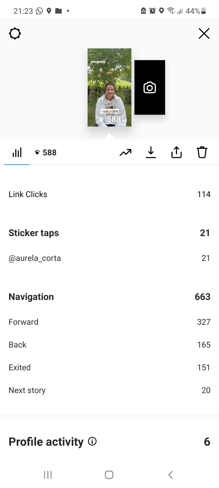

Abstract
Il sito web per “Aurela Cörta” nasce dall'idea di creare uno spazio web in cui la band possa raccontarsi. Vuole essere un valore aggiunto per la band, come luogo dove conservare ricordi e esperienze. Allo stesso tempo il sito ha come obiettivo quello di fornire ad un target utente di giovani altoatesini, informazioni utili riguardo alla band “Aurela Cörta” e di conseguenza aumentare la visibilità della stessa.
Project Management Plan
BENCHMARKING
1. Obiettivi
Il progetto ha lo scopo di ampliare il range di raggiungibilità della band sul web, di far conoscere meglio la band al suo pubblico e di facilitare il contatto tra band e pubblico. I temi sono la storia del gruppo musicale e dei suoi membri, la musica, gli eventi, lo shop di merchandising e la gallery di foto.
2. Target utente
Il target utente primario è, come anticipato, un pubblico giovane, tra i 15 e i 35 anni, che vive in Alto Adige. Idealmente, è alla ricerca di un accompagnamento musicale per qualche evento, come per esempio il proprio matrimonio.
3. Competitors
I due competitor principali selezionati sono www.wisetimeband.it e www.jimihenndreck.com
Wisetimeband.it:
La band “Wisetime”, anch’essa attiva nella zona della Val Badia,
ha un target di utenti diverso. L’età è compresa principalmente fra i 30 i 50 anni.
Il genere musicale è rock e oldies. Il sito è formato da diverse pagine web.
Descrive in modo approfondito la storia della band e dei suoi membri,
presenta il repertorio di immagini, audio e video che riguardano la band. Grafica e struttura sono migliorabili.
Jimihenndreck.com:
Ampliando il raggio di analisi all’intero Alto Adige
è stato selezionato anche il sito della band “Jimi Henndreck”.
È un gruppo musicale molto simile a "Aurela Cörta", ha un target utente giovane,
cantano nel loro dialetto e si presentano come band innovativa.
Il sito web è one page e racconta la band in modo sintetico ma puntuale.
Graficamente i contenuti sono organizzati in modo originale e creativo.
I testi comici che usa sono adatti al linguaggio di un pubblico giovane.

STRUTTURA E LAYOUT
1. Architettura del sito

2. Wireframes


3. Look & Feel

Brand identity kit
Per quanto riguarda le scelte grafiche sono state prese in considerazione sia le informazioni riguardo al brand raccolte tramite Google Forms, che i risultati della ricerca di mercato. La band vuole essere percepita: innovativa e seia però amichevole. Il font che è stato scelto si chiama Red Hat Display. Si tratta di un carattere geometrico, razionale e ingegneristico a contrasto con il font del logotipo. La palette colori è caratterizzata soprattutto dal colore arancione, simbolo di amicizia e vivacità, accostato a un verde oliva abbastanza scuro e a un colore ocra. Come colori più neutri sono stati scelti un crema e verde scurissimo tendente al nero. In alcune pagine della versione desktop è stato aggiunto un effetto grafico alle immagini. Tramite la proprietà “background-attachment: scroll” le immagini risultano essere fisse mentre il resto dei contenuti scrolla. Questo effetto crea il giusto mix tra staticità e movimento che caratterizza anche la band e la sua musica, che con uno strumento musicale molto tradizionale creano melodie moderne.
LINGUAGGIO E STRUMENTI
1. Linguaggi:
Linguaggio di Markup HTML
Linguaggio per la grafica CSS
Linguaggio di programmazione: Javascript
2. Strumenti:
Pianificazione:
• Google Forms
• Google Trends
Design e grafica:
• Google Fonts: font
• Adobe Colors: palette di colori
• Figma: architettura ad albero, grafica del sito
• AdobeXD: Wireframes
• Font Awesome: Icons
Lancio e valutazione:
• Github: pubblicazione del sito
• Instagram: pubblicizzazione
• Google Analytics: conteggio dei visitatori del sito
Comunication Strategy
1. Backgroud
Dal benchmarking è risultato che pochissime band locali simili presentano un sito web. Ciò significa che il sito ha molto potenziale a livello locale. Il target utente di riferimento è abituato a un uso costante del web, perciò, è necessario fornire contenuti web adeguati. Tramite un sito web intuitivo e ben organizzato è possibile raggiungere un pubblico ampio.
2. Obiettivi comunicativi
L'obiettivo del sito è quello di aumentare la visibilità della band e dunque, di fare pubblicità. La struttura del sito dev'essere molto semplice e chiara affinché il target utente trovi le informazioni che cerca in modo facile e veloce. I punti del menù rispondono alle domande chiave che un potenziale fan o cliente della band può porsi. Gli obiettivi comunicativi posti sono 100 visite alla pagina.
3. Target audience e messaggio
Il target utente del sito sono gli under 30, gruppo di persone che viene raggiunto specialmente tramite i social. Per pubblicizzare il sito è stato creato un breve video di presentazione da condividere nelle Instagram stories.
4. Promozione
Per la promozione del sito sono stati usati principalmente Instagram e WhatsApp che sono i due canali più utilizzati dal target utente.
5. Valutazione dei risultati
Il progetto è ritenuto di successo perché il target utente ha apprezzato il sito. Gli obiettivi comunicativi sono stati raggiunti. Tramite Google Analytics sono state registrate 232 visite al sito dopo la pubblicazione del link sulle storie di Instagram. La prima story Instagram presenta 588 visualizzazioni e i click sul link totali risultano essere 284.
